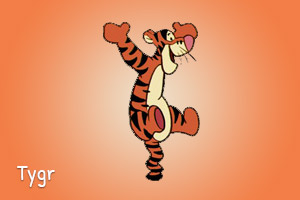
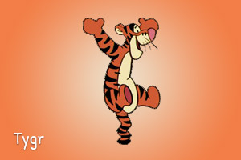
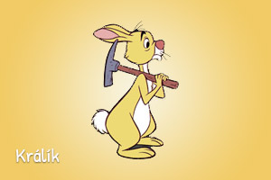
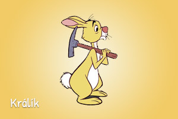

O mně

Ahoj. Jmenuji se Kryštůfek Robin a jsem malý chlapec, se kterým se zvířátka ze Stokorcového lesa spřátelila a hrají si se mnou jako s jediným člověkem z lidského světa. Kamarádím se s Medvídkem Pú, Prasátkem, Ijáčkem, Tygrem, Králíčkem se všemi jeho přáteli a příbuznými, Sovou a Klokanicí s Klokánkem.
Znám a mám nejrůznější věci, které svým kamarádům rád půjčuji a rád je všemu naučím. Rád pořádám nebezpečné výpravy, ale všechna zvířátka se se mnou cítí v bezpečí. Občas cestuji do Afriky a zase zpátky, a mám moc rád svého medvídka. Dopoledne trávím hledáním Hnetubuda.
 



 
